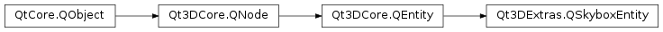

Qt3DExtras.QSkyboxEntity¶
Synopsis¶
Functions¶
- def
baseName() - def
extension() - def
isGammaCorrectEnabled()
Slots¶
- def
setBaseName(path) - def
setExtension(extension) - def
setGammaCorrectEnabled(enabled)
Signals¶
- def
baseNameChanged(path) - def
extensionChanged(extension) - def
gammaCorrectEnabledChanged(enabled)
Detailed Description¶
Qt3DExtras.QSkyboxEntityis a convenienceQt3DCore.QEntitysubclass that can be used to insert a skybox in a 3D scene.By specifying a base name and an extension,
Qt3DExtras.QSkyboxEntitywill take care of building a TextureCubeMap to be rendered at runtime. The images in the source directory should match the pattern: base name + * “_posx|_posy|_posz|_negx|_negy|_negz” + extensionBy default the extension defaults to .png.
Be sure to disable frustum culling in the FrameGraph through which the skybox rendering happens.
Note
Please note that you shouldn’t try to render a skybox with an orthographic projection.
-
class
PySide2.Qt3DExtras.Qt3DExtras.QSkyboxEntity([parent=nullptr])¶ Parameters: parent – PySide2.Qt3DCore.Qt3DCore::QNodeConstructs a new
Qt3DExtras.QSkyboxEntityobject withparentas parent.
-
PySide2.Qt3DExtras.Qt3DExtras.QSkyboxEntity.baseName()¶ Return type: unicode Returns the base name of the Skybox.
See also
PySide2.Qt3DExtras.Qt3DExtras::QSkyboxEntity.setBaseName()
-
PySide2.Qt3DExtras.Qt3DExtras.QSkyboxEntity.baseNameChanged(path)¶ Parameters: path – unicode
-
PySide2.Qt3DExtras.Qt3DExtras.QSkyboxEntity.extension()¶ Return type: unicode Returns the extension
See also
PySide2.Qt3DExtras.Qt3DExtras::QSkyboxEntity.setExtension()
-
PySide2.Qt3DExtras.Qt3DExtras.QSkyboxEntity.extensionChanged(extension)¶ Parameters: extension – unicode
-
PySide2.Qt3DExtras.Qt3DExtras.QSkyboxEntity.gammaCorrectEnabledChanged(enabled)¶ Parameters: enabled – PySide2.QtCore.bool
-
PySide2.Qt3DExtras.Qt3DExtras.QSkyboxEntity.isGammaCorrectEnabled()¶ Return type: PySide2.QtCore.boolReturns true if gamma correction is enabled for this skybox.
-
PySide2.Qt3DExtras.Qt3DExtras.QSkyboxEntity.setBaseName(path)¶ Parameters: path – unicode Sets the base name to
baseName.See also
PySide2.Qt3DExtras.Qt3DExtras::QSkyboxEntity.baseName()
-
PySide2.Qt3DExtras.Qt3DExtras.QSkyboxEntity.setExtension(extension)¶ Parameters: extension – unicode Sets the extension to
extension.See also
PySide2.Qt3DExtras.Qt3DExtras::QSkyboxEntity.extension()
-
PySide2.Qt3DExtras.Qt3DExtras.QSkyboxEntity.setGammaCorrectEnabled(enabled)¶ Parameters: enabled – PySide2.QtCore.boolSets the gamma correction enable state to
enabled.See also
PySide2.Qt3DExtras.Qt3DExtras::QSkyboxEntity.isGammaCorrectEnabled()
© 2018 The Qt Company Ltd. Documentation contributions included herein are the copyrights of their respective owners. The documentation provided herein is licensed under the terms of the GNU Free Documentation License version 1.3 as published by the Free Software Foundation. Qt and respective logos are trademarks of The Qt Company Ltd. in Finland and/or other countries worldwide. All other trademarks are property of their respective owners.